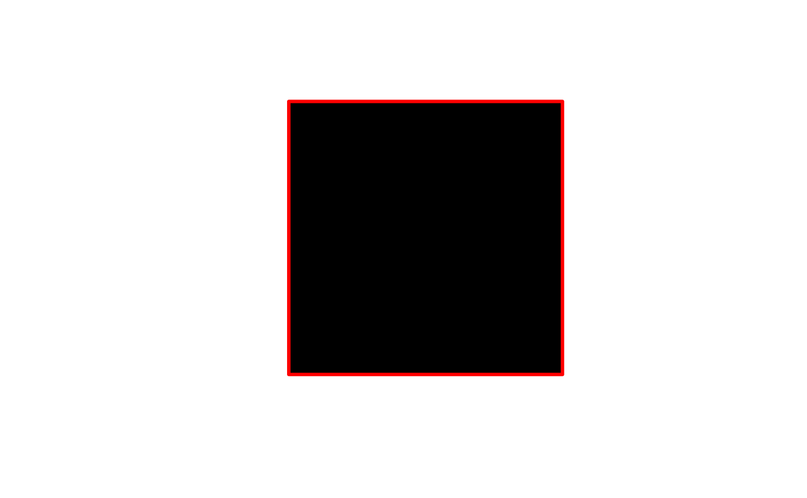
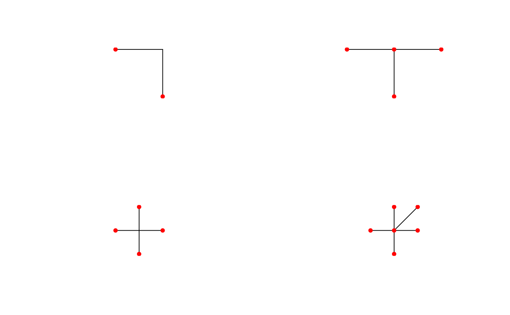

topo-unary-gBoundary.RdFunction for determinging the Boundary of the given geometry as defined by SFS Section 2.1.13.1
gBoundary(spgeom, byid=FALSE, id = NULL)sp object as defined in package sp
Logical determining if the function should be applied across subgeometries (TRUE) or the entire object (FALSE)
Character vector defining id labels for the resulting geometries, if unspecified returned geometries will be labeled based on their parent geometries' labels.
Depending of the class of the spgeom the returned results will differ. Based on the documentation of JTS (on which GEOS is based) the following outputs are expected:
| Point | empty GeometryCollection |
| MultiPoint | empty GeometryCollection |
| LineString | if closed: empty MultiPoint if not closed: MultiPoint containing the two endpoints. |
| MultiLineString | MultiPoint obtained by applying the Mod-2 rule to the boundaries of the element LineStrings |
| LinearRing | empty MultiPoint |
| Polygon | MultiLineString containing the LinearRings of the shell and holes, in that order (SFS 2.1.10) |
| MultiPolygon | MultiLineString containing the LinearRings for the boundaries of the element polygons, in the same order as they occur in the MultiPolygon (SFS 2.1.12/JTS) |
| GeometryCollection | The boundary of an arbitrary collection of geometries whose interiors are disjoint consist of geometries drawn from the boundaries of the element geometries by application of the Mod-2 rule (SFS Section 2.1.13.1) |
The mod-2 rule states that for a multiline a point is on the boundary if and only if it on the boundary of an odd number of subgeometries of the multiline (See example below).
x = readWKT("POLYGON((0 0,10 0,10 10,0 10,0 0))")
b = gBoundary(x)
plot(x,col='black')
plot(b,col='red',lwd=3,add=TRUE)

# mod-2 rule example
x1 = readWKT("MULTILINESTRING((2 2,2 0),(2 2,0 2))")
x2 = readWKT("MULTILINESTRING((2 2,2 0),(2 2,0 2),(2 2,4 2))")
x3 = readWKT("MULTILINESTRING((2 2,2 0),(2 2,0 2),(2 2,4 2),(2 2,2 4))")
x4 = readWKT("MULTILINESTRING((2 2,2 0),(2 2,0 2),(2 2,4 2),(2 2,2 4),(2 2,4 4))")
b1 = gBoundary(x1)
b2 = gBoundary(x2)
b3 = gBoundary(x3)
b4 = gBoundary(x4)
par(mfrow=c(2,2))
plot(x1); plot(b1,pch=16,col='red',add=TRUE)
plot(x2); plot(b2,pch=16,col='red',add=TRUE)
plot(x3); plot(b3,pch=16,col='red',add=TRUE)
plot(x4); plot(b4,pch=16,col='red',add=TRUE)
